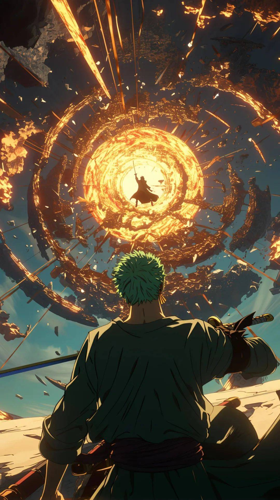
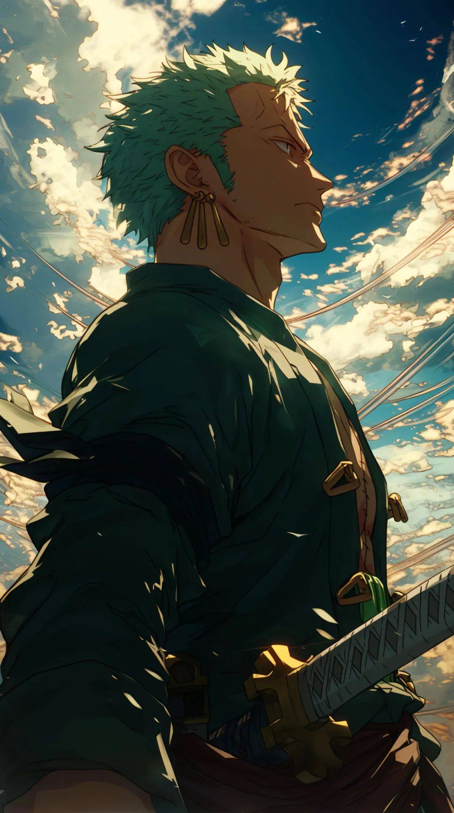
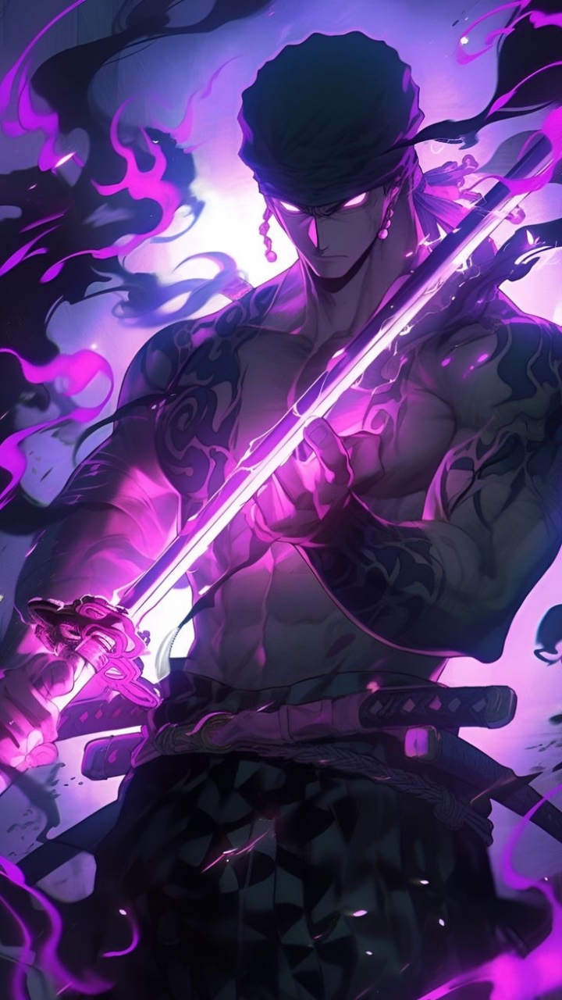

罗罗诺亚·索隆
|  |  |  |
罗罗诺亚·索隆（Roronoa Zoro）是日本漫画《航海王》（又称《海贼王》）及其衍生作品中的主要角色之一，他是“草帽一伙”的战斗员，人称“海贼猎人”。
1.梦想： 索隆出生于东海的霜月村，自幼在霜月耕四郎的道场学习剑术。他的目标是成为世界第一的大剑豪，这个梦想源于他与童年挚友古伊娜的约定古伊娜意外逝世后，索隆继承了她的遗志和配刀和道一文字，发誓要成为世界第一剑士，让名字响彻天堂.
2.站术与战斗风格：索隆是一名三刀流剑士，他的剑术高超，能够在战斗中使用三把刀进行攻击，风格独特，以快速和强大的斩击著称，经常在战斗中冲锋在前，面对敌人毫不畏俱。
3. 性格特点: 索隆性格坚定，有着强烈的正义感和对朋友的忠诚。他尊重船长路飞的决定，并在团队迷茫时分析局势，引导团队做出决策。
4.路痴:他有着严重的路痴问题，这使得他在航行中常常迷路，甚至在抵达岛屿时多数选择守船。
5.霸气与能力： 索隆具备“武装色”霸气和“见闻色”霸气，这些能力使他在战斗中更加强大。
6. 悬赏金：• 索隆的悬赏金随着他在《海贼王》世界中的冒险和战斗不断提升，目前悬赏金为3亿2000万贝利。
作为“草帽一伙”的重要成员，他的故事和成长一直是《海贼王》中的核心内容之一，他不仅以其剑术和战斗风格著称，还以其坚定的意志和对朋友的忠诚赢得了广大粉丝的喜爱。